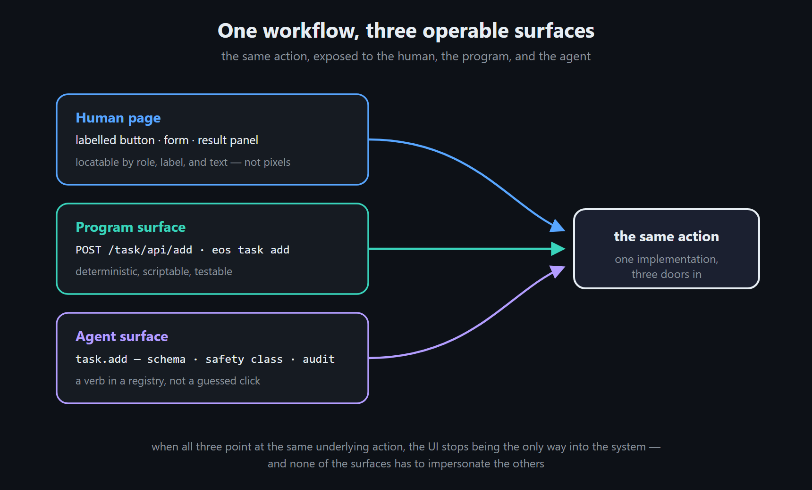
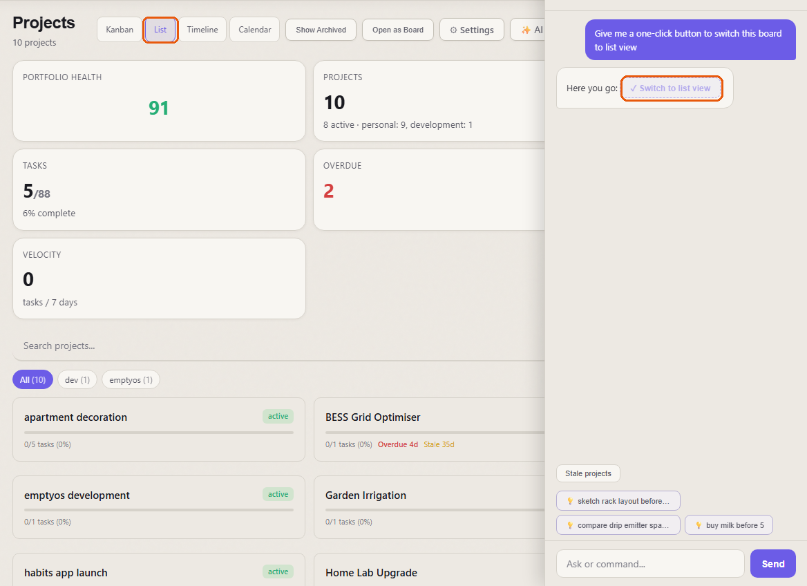
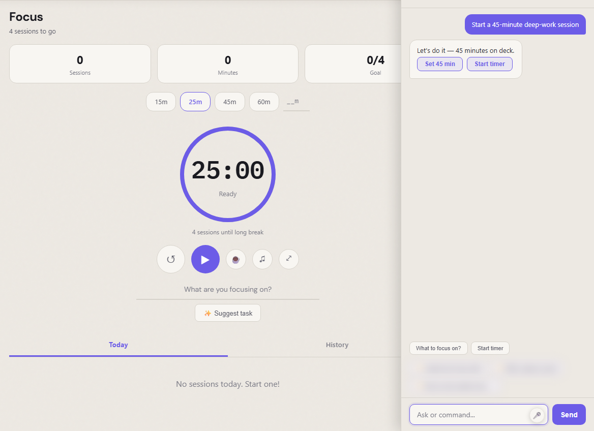
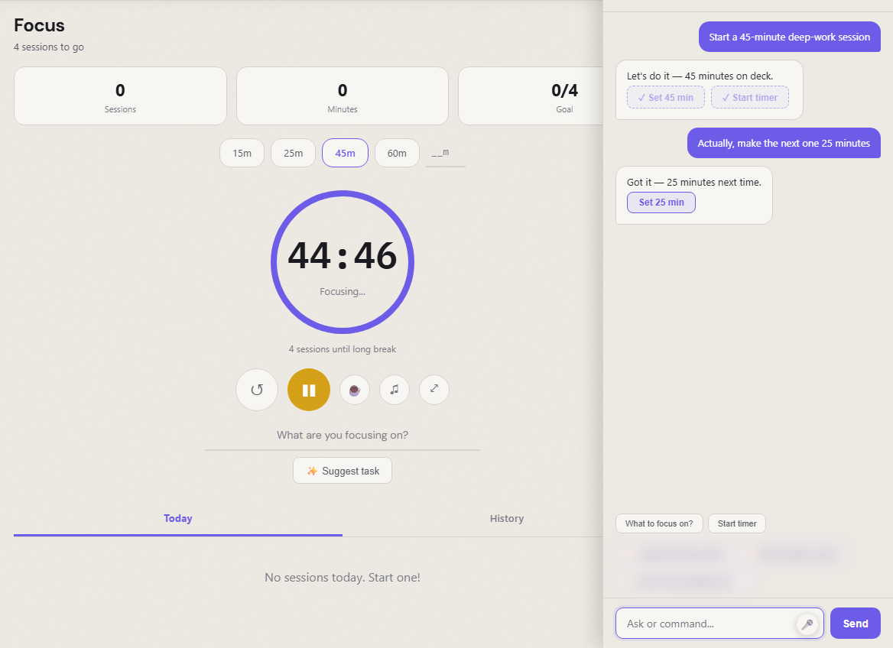
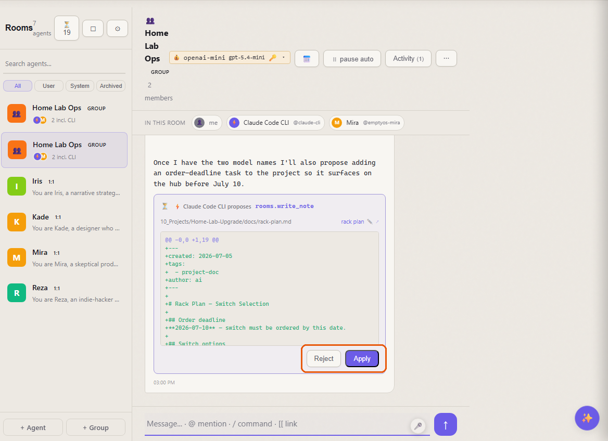
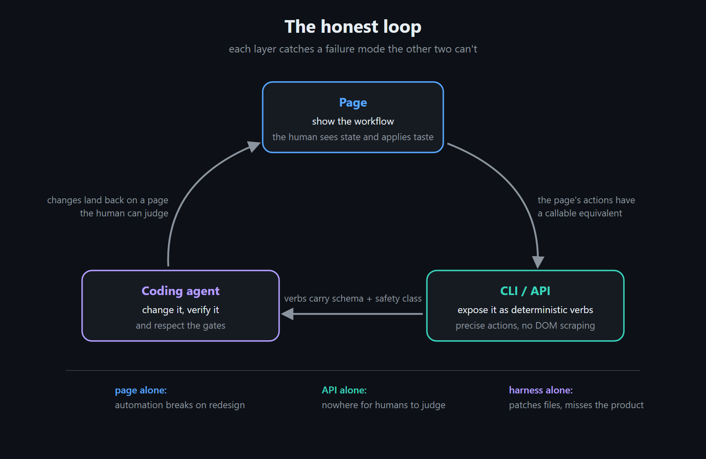
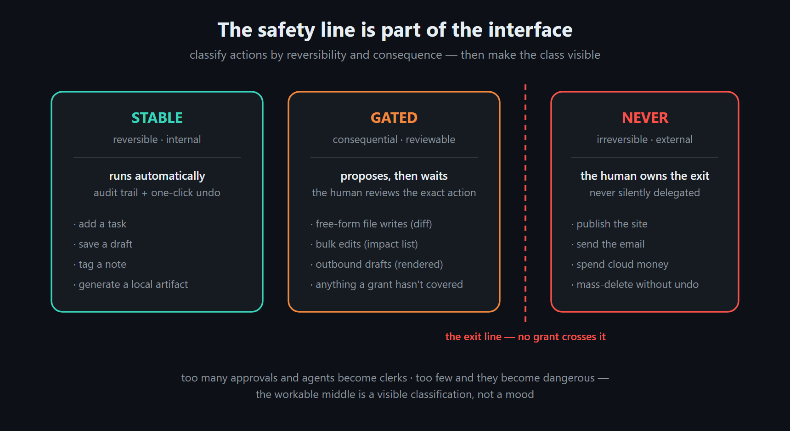

An AI-Native Interface Is a Contract, Not a Chatbox
Most products that call themselves AI-native are a normal app with a chat window bolted to the side. The human keeps clicking. The AI explains things, drafts text, answers questions — and stays outside the product.
I've shipped that shape myself. It's useful. I no longer think it deserves the name.
After a few weeks of wiring an assistant rail into EmptyOS's own pages, the test I keep coming back to is sharper:
Can the AI operate the product through the product's own interface contract?
Not by guessing pixels or driving a fake mouse, and not by holding a backend token that bypasses the UI. The product should tell the AI what the current page is, which actions are legal, what state they touch, what came back — and where the human has to approve before anything consequential happens.
In EmptyOS that means every workflow worth having is reachable three ways — as a human page, as a program surface (an HTTP route or a CLI command), and as a declared agent verb — with a coding-agent harness on top for changing the system itself.

A chatbox is not a contract¶
A chatbot beside an app has one durable weakness: it isn't part of the app's operating surface.
If the assistant says, "click the Projects tab, filter stale projects, then add a task," the human still does the operation. If it drives the browser with raw mouse coordinates, a layout shift or a renamed CSS class breaks the run. If it skips the page and writes straight to storage, the human loses the context the page existed to provide.
A page already knows the local workflow: which project is selected, which tab is active, which filters are on. The page is where the human judges state. Let the AI act there, and assistance moves from advice to action without hiding the action from the user.
Getting there took one design rule I didn't start with:
A page shouldn't only render its controls. It should declare its operable affordances.
That declaration is the whole difference between a page the AI can talk about and a page the AI can use.
![A chatbox is not a contract — the same request, four routes. A bolted-on chat window fails three ways: advice ("click Projects, then filter…") leaves the human doing the operation; pixel driving breaks on a layout shift or a renamed class; a backend token skips the page where the human judges. The interface contract is the fourth route: the page declares its actions (EOS.registerActions — the declared handles), verbs carry schema plus a safety class (stable auto-runs, gated waits, never stays human), and the result lands on the page, marked ✓, where the human judges. A chatbox talks about the product; a contract lets the AI use it through handles the product deliberately exposes.|637](../assets/ai-access-chatbox-contract.png)
The page as an action surface¶
An AI-operable page has three jobs.
Readable. Semantic UI — buttons with names, fields with labels, stable headings, inspectable errors. This serves humans, screen readers, tests, and browser agents at once; the accessibility work and the agent work turn out to be the same work.
Actionable. Page-local operations, declared. Projects has filter, set_view, open_project; Focus has set_duration, start_timer, get_suggestion. These aren't abstract backend verbs — they're the operations that make sense in the current browser context.
Self-describing. The current app, the URL, a page description, the available actions, any live data the page chooses to expose. Without that context the model guesses; with it, a request maps to a concrete operation.
In EmptyOS, every page on the shared frontend runtime loads a rail beside the page. A page opts in with EOS.registerActions(...) — its actions, their descriptions, a few quick prompts, a one-paragraph page description — and can define EOS.getPageMetrics() to hand over live state. The rail builds a context object for the current page and hands the model the page's declared actions — for on-page operations, those handles and nothing else. Anything consequential crosses into the verb-and-review layer instead of hiding in page JavaScript.
The AI stops answering from beside the page and starts holding the page's declared handles.
Real pages, real handles¶
On Projects, the page registers filter, set_view, and open_project, plus a description: projects have status, tasks, health assessment, a kanban view. "Which projects have no recent activity?", "Switch this to list view", "Open the EmptyOS project" — none of these require the assistant to infer DOM structure. The operations were declared.
In the screenshots below, the rail looks like a chatbox. The difference is what the buttons are. Each one is a page-declared action that executes under the contract — marked ✓ once it has run, with the page state visibly changed behind it — not generated advice about where to click.

On Focus, the registered actions include set_duration, start_timer, and get_suggestion. Ask for a deep-work session and the assistant offers the page's own timer actions as one-click controls. Click, and the page changes under you; change your mind, and it follows across turns.


Journal registers go_today, select_mood, ai_reflect, do_search, and pin_entry — a small, explicit control surface rather than a passive document.
As I write this, twenty-two pages register actions this way — Search, Task, Expense, Settings, a dictionary, a handful of locally installed personal apps. Most expose only quick actions and a description; exactly one exposes live metrics so far. That ratio is honest: the contract is deliberately tiny, small enough for a page to adopt in twenty lines without turning into an agent-framework project.
The page is not the whole contract¶
Page actions alone would still be fragile. Adding a task, saving a draft, applying a pending write, deploying a site, sending a message — these need a deterministic backend shape. The page exposes the affordance; the operation underneath needs a stable verb.
Inside EmptyOS, call_app is the app-to-app action spine, and on top of it sits a verb registry. A verb declares the app action, its argument shape, which surfaces may invoke it, and — the part I'd defend hardest — its safety class: stable, gated, or never.
I added that classification because AI access turned out to be a trust problem before it was a routing problem. A stable internal action runs automatically, with audit and undo behind it. A gated action proposes, then waits for review. A never action can't be auto-delegated at all: publish, send, spend, or destructive work without a verified inverse. The page can be operable without being uncontrolled; the AI can act without holding a blank check.

The rail sits on the same system. In the simple path it uses page-local registered actions; in the richer paths, model output routes through server actions, review cards, Apply/Reject queues, confirm prompts, and undo surfaces. The branch I'm on right now folds the rail and Aura — the voice assistant — into one brain, so text and voice share structured cards, intent dispatch, pending actions, and session grants. Page, voice, room, CLI, and agent surfaces end up as different doors into one action graph.
CLI and coding agents are native access too¶
The terminal gets the same deal. eos chat, eos rooms, and eos code are terminal frontends over the same backends that power the web pages — not separate implementations. When the backend learns a safer verb, browser and CLI both get it.
There's also an agent app, reachable through /agent/ and eos chat, with tools like Read, Grep, Edit, Write, Bash, and — the one that matters here — CallApp: the coding agent can invoke app verbs through the running system instead of treating the repo as a pile of files.
Three layers of AI access, then:
- Page — the assistant operates the current page through page-declared actions.
- Verb — assistants, CLI, voice, rooms, and external agent surfaces call deterministic app verbs with safety classes.
- Coding agent — reads the codebase, changes it, runs checks, and calls the live app graph when it needs runtime state.

Which is why "AI-native" reads to me as an interface architecture, not a model choice.
The safety model is part of the interface¶
"The AI can operate the page" sounds alarming if the page is treated as a bag of hidden powers. In EmptyOS, operability is bounded by the rule that governs the rest of the system: the human owns judgment and irreversible exits; the system owns reversible execution.

I don't treat that line as a compliance footnote. A useful AI interface has to show what can happen now, what needs review, and what can't be delegated — the classification is UX, not policy paperwork. Followed, it makes the assistant faster without making it invisible: it handles the small reversible moves that slow people down, prepares the consequential ones, and stops at the boundary where human judgment is the product.
Where this stands¶
A few honest caveats, because an architecture post is easy to over-claim.
The page rail is weeks old, and the unification with the voice assistant is literally the branch I'm on — parts of it sit behind feature flags while I decide whether they hold up. Twenty-two pages declare actions today; the rest get a generic assistant that can read a page description and not much more. Registration is manual, page by page — there's no magic that discovers affordances, and I think that's correct (a declared contract is the point), but it means coverage grows one page at a time. And the model still sometimes proposes the wrong action; the gates exist precisely because it does.
What has held up is the shape. The same verb layer already serves the voice assistant, the assistant's slash commands, the rooms review gate, and an external-agent surface — one declaration, several doors. That's the part I'd bet on even if every detail above changes.
The part I care about most¶
Of the three layers, the page. It's where the human's attention already is, where state is visible, and where judgment actually gets applied. An AI that can act there doesn't pull the user away into a separate chat universe — it acts in the same place the user is judging the work.
The threshold I'm building toward is the moment the assistant stops saying, "here's how you can use this page," and starts saying, "I can do that on this page — review this part before it crosses the line."
Make every page an operable surface. Make every serious action a declared verb. Keep the human at the boundary where judgment matters.
An AI-native interface is a contract, not a chatbox.
![The whole argument in one picture. Inside the product, the AI operates through the declared interface contract — page context, registered actions, schemas, state, results; the AI only sees what the contract exposes — with the verb layer's three safety classes underneath, split by the human-judgment boundary: the AI executes fast, reversible work, and irreversible exits stay with the human. Outside the product, a chatbox can only talk about it. Illustration — the product panels are stylized mockups, not screenshots; the real ones are above.|760](../media/ai-access-share-card.png)
Built with EmptyOS - an open-source mind companion that thinks and creates with you, not for you. Try the live demo (sample vault, sign-in token included) - Source on GitHub.
Listen to this post¶
⬇ Download as video — share on LinkedIn, X, etc.
AI-generated podcast discussion of this article